Twine 2 基础操作与界面介绍
Twine 2 是一个用于创建交互式、非线性故事的开源工具[184]。其用户界面设计旨在使可视化的分支叙事流程变得简单直观。本章将详细介绍 Twine 2 的界面布局、项目创建流程、Passage（节点）编辑方法、基础链接语法，以及测试和发布的完整流程。
Twine 2 界面布局详解
Story Listing (故事列表)
启动 Twine 2 后的默认界面，是所有故事的存储和访问中心[188]。右侧侧边栏提供创建、导入、归档和格式管理功能[186]。
- +Story: 创建新故事
- Import From File: 导入现有故事
Passages View (故事地图)
核心编辑界面，可视化展示叙事流程。每个矩形代表一个 Passage（节点），箭头线条显示它们之间的连接关系[188]。
- 双击 Passage 进行编辑
- 拖动调整布局
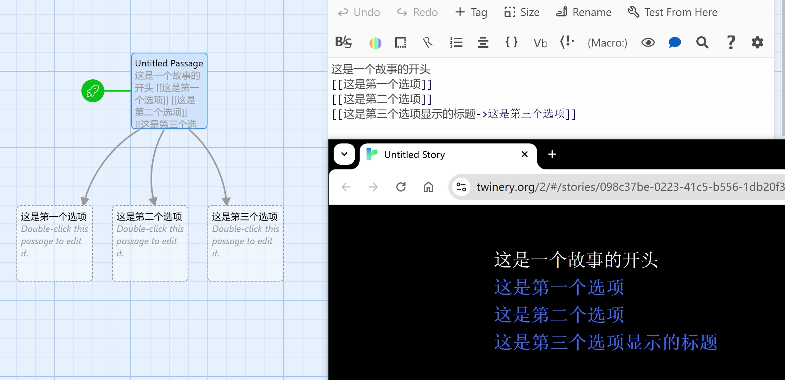
Twine 编辑器并列视图：左侧为可视化节点编辑器，右侧为文本编辑区和浏览器预览窗口
基础链接语法
链接是 Twine 故事的核心组成部分，连接不同的 Passage（节点）以构建叙事流程。Twine 2 的链接语法在所有故事格式之间共享[257]。
自定义显示文本 (正向箭头)
链接显示描述性文本，实际指向简短的 Passage 名称，便于管理[259]。
自定义显示文本 (反向箭头)
功能与格式 2 相同，只是箭头方向相反，某些开发者可能觉得更直观[257]。
重要提示：大小写敏感性
Passage 链接是大小写敏感的。`[[A passage]]` 和 `[[A PASSAGE]]` 被视为不同的链接[257]。建议制定一致的命名规范（如使用小写字母和下划线）。
测试与发布
Play vs Test 模式
模拟真实玩家体验，在新标签页中打开，显示最终发布时的界面样式。
调试模式，显示额外的调试信息（如变量状态），便于快速定位问题[188]。
发布为 HTML 文件
- 1 在 Story Map 点击 Build 标签
- 2 选择 Publish to File 选项[230]
- 3 保存 HTML 文件，可直接在浏览器中打开或上传到网络
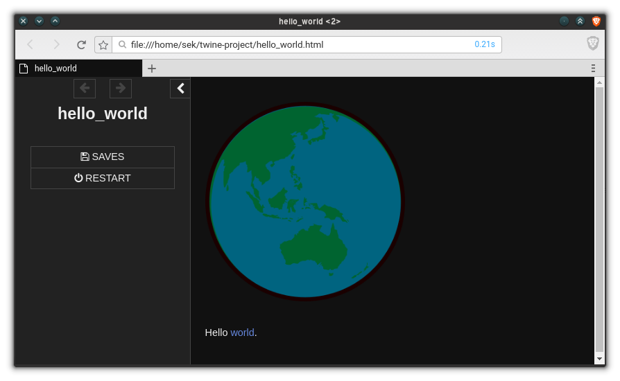
Twine 发布后的 HTML 页面示例，展示了包含侧边栏和主内容区的游戏界面
最佳实践与技巧
命名规范
-
Passage 名称使用小写字母和下划线 (如
forest_entrance) - 保持命名风格一致，注意大小写敏感性
- 链接文本使用自然语言，体现玩家行动
测试清单
- 确保所有链接都能正确跳转
- 在不同浏览器中测试兼容性
- 验证故事能够到达所有预定的结局
故事格式选择与 SugarCube 初步配置
解释 Twine 故事格式的作用，对比 Harlowe 与 SugarCube 的差异，指导用户如何在 Twine 中切换至 SugarCube 格式，并介绍 StorySettings 等基础配置文件的设置方法。
故事格式概述
故事格式（Story Format）就像是 Twine 故事引擎的"方言"或"解释器"。它决定了故事如何呈现给玩家、如何处理交互以及支持哪些功能[87]。当你在 Twine 中创建一个故事时，必须选择一个故事格式，它负责将你的 Passage（片段）和链接转换成玩家在浏览器中看到的互动体验。
渲染引擎
将 Passage 结构转换为 HTML 页面
交互处理
定义链接、按钮等交互行为
状态管理
处理变量、保存游戏状态
宏和 API
提供扩展功能和方法
Harlowe 与 SugarCube 深度对比
| 特性 | Harlowe | SugarCube |
|---|---|---|
| 目标用户 | 编程初学者[99] | 兼顾初学者和高级用户[99][401] |
| 学习曲线 | 最容易上手[96] | 需要一定学习时间[96] |
| 编程风格 | 独特宏语法，接近自然语言 | 传统编程风格，类似 JavaScript |
| 可扩展性 | 几乎无法扩展[99] | 高度可扩展，支持自定义脚本[99] |
Harlowe
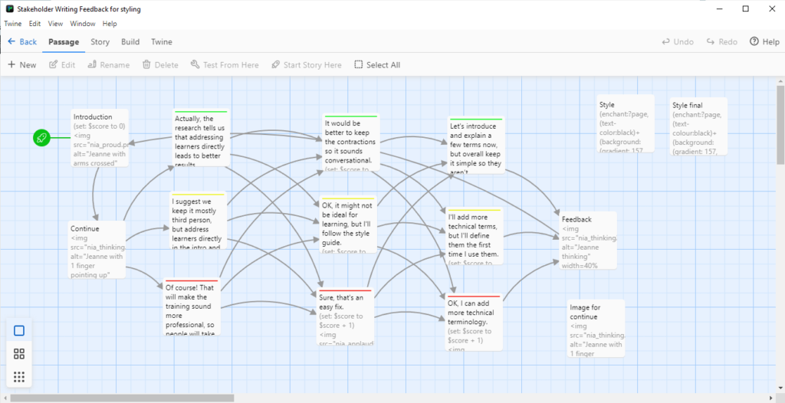
Twine 中的节点可视化展示，不同格式对节点的逻辑处理能力不同
在 Twine 中切换到 SugarCube
SugarCube 核心配置
Config API
控制故事的核心行为（调试、历史、UI等）。
Story JavaScriptSetting API
管理玩家可自定义的设置（音量、主题、难度等）。
Story JavaScript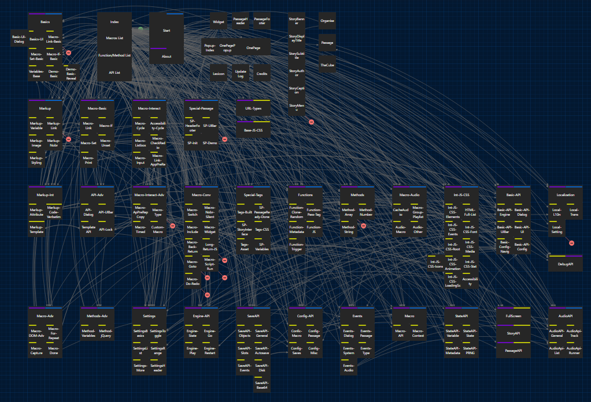
SugarCube 系统架构模块依赖关系图
/*
* SugarCube 基础配置
* 适用于大多数互动小说游戏
*/
// 调试配置
Config.debug = false;
// 历史记录配置
Config.history.controls = true;
Config.history.maxStates = 50;
// 保存配置
Config.saves.slots = 10;
Config.saves.autoload = false;
Config.saves.autosave = false;Setting API 实战示例
Setting.addToggle("hardMode", {
label: "困难模式",
default: false,
onChange: function () {
// 应用困难模式逻辑
if (settings.hardMode) {
/* ... */
}
}
});// 定义难度列表
var difficultyLevels = [
"简单", "普通",
"困难", "极难"
];
Setting.addList("difficulty", {
label: "游戏难度",
list: difficultyLevels,
default: "普通",
onChange: function () {
console.log("难度设置为:",
settings.difficulty);
}
});配置最佳实践
- 位置规范：所有代码必须在 Story JavaScript 中[588]。
- 分环境配置：开发环境开启调试，生产环境关闭。
- 持久化：在 onChange 回调中调用 SaveAuto.save()。
常见问题
配置不生效？
检查代码是否在 Story JavaScript 中，而非普通 Passage。
设置不保存？
确保在 onChange 回调中调用了保存函数。
切换格式后报错？
Harlowe 语法与 SugarCube 不兼容，需转换宏语法（如 `(set:)` → `<
总结与资源
SugarCube 是构建复杂互动项目的强大工具。通过 Config API 控制核心行为，通过 Setting API 提供玩家选项。记住，所有配置代码都必须在 Story JavaScript 中。
SugarCube 核心语法与变量系统
SugarCube 2 提供了一套强大而灵活的核心语法系统，是构建复杂互动故事的基石。掌握变量定义、文本输出、逻辑控制与循环机制，将为您的创作打开无限可能。
变量系统与作用域
SugarCube 中的变量根据其生命周期和作用域分为两种类型：永久变量（全局）和临时变量（局部）。正确选择变量类型是管理游戏状态的关键。
永久变量 ($)
以美元符号开头，具有全局作用域。值贯穿整个游戏直至结束，适合存储玩家状态、游戏进度[340]。
<<set $playerName = "Alice">>
<<set $health = 100>>
<<set $inventory = ["sword", "shield"]>>临时变量 (_)
以下划线开头，具有局部作用域，只在当前 passage 显示期间存在。适合临时计算结果、循环计数器[340]。
<<set _damage = random(10, 20)>>
<<set _totalPrice = _quantity * _unitPrice>>变量作用域详解
重要注意事项：在 widget 中使用临时变量时，它们实际上是在包含 widget 的 passage 作用域中声明的，而不是在 widget 的独立作用域中[319]。多个 widget 实例会共享同一个临时变量，这可能导致意外的行为。
<<widget test>>
<<set _count = 0>>
<<repeat 4s>>
<<print _count>>
<<set _count = _count + 1>>
<</repeat>>
<</widget>>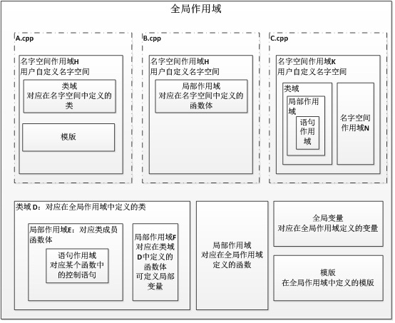
文本输出宏
通用输出，最灵活
简化语法，简洁
自动添加前后空格
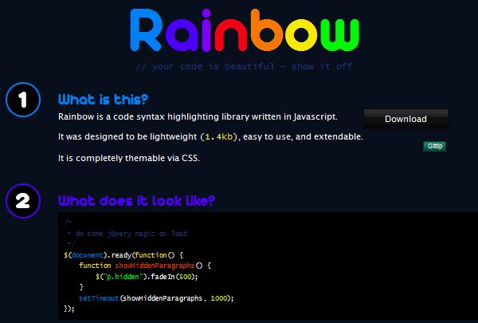
条件逻辑控制宏
比较运算符[665]
| 运算符 | 描述 | 示例 |
|---|---|---|
| eq | 等于 (宽松) | $bullets eq 6 |
| is | 严格等于 | $bullets is 6 |
| gt / gte | 大于 / 大于等于 | $cash gt 5 |
| lt / lte | 小于 / 小于等于 | $health lte 50 |
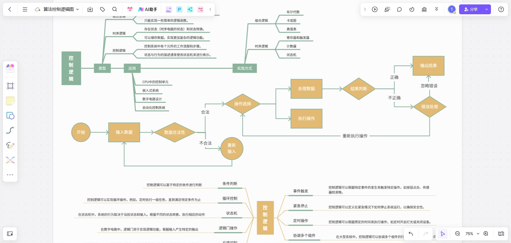
逻辑流程图展示了条件分支在互动故事中的路径选择。
<<switch>> 多分支选择
<<set $level = 7>>
<<switch true>>
<<case $level lte 5>>
You are a beginner adventurer.
<<case $level lte 10>>
You are an experienced adventurer.
<<default>>
You are a legendary champion!
<</switch>>循环控制宏
<<for>> 循环
<<for _i to 0; _i < 5; _i++>>
Count: <<= _i>>
<</for>>控制语句
-
<<break>>
立即退出当前循环。
-
<<continue>>
跳过当前迭代，继续下一次。
循环与定时器冲突
在 SugarCube 中，<<for>>
循环会立即执行完毕，这意味着在循环中设置的 <<timed>>
事件会同时触发，无法实现逐步效果[673]。建议使用递归 widget 来解决此类动画需求。
实战应用案例
玩家状态系统
<<set $player = {
name: "Alice",
health: 85,
maxHealth: 100,
level: 7
}>>
=== Player Status ===
Name: $player.name
Level: $player.level
Health: <<print $player.health>> / <<print $player.maxHealth>>库存管理
<<set $inventory = [
{ name: "Potion", qty: 3 },
{ name: "Key", qty: 1 }
]>>
<<for _i to 0; _i < $inventory.length; _i++>>
- <<= $inventory[_i].name>>
<</for>>最佳实践与常见问题
性能优化建议
- 变量初始化：临时变量必须在使用前先设置，否则会显示 "undefined"[520]。
-
优先裸变量：对于简单的变量输出，裸变量语法（
$name）比 <<print>> 更高效。 -
避免过度嵌套：使用逻辑运算符（
&&,||）代替多层嵌套的 <<if>>。
常见问题 (FAQ)
Q: eq 和 is 有什么区别？
A: eq 是宽松比较（类型转换），is 是严格比较（类型和值都相同）。推荐使用 is。
Q: 如何逐步显示循环结果？
A: <<for>> 会立即完成。使用递归 widget 配合 <<timed>> 宏实现动画效果。
SugarCube 高级交互功能与 UI 定制
SugarCube 2 提供了丰富的高级交互功能和强大的 UI 定制能力，使开发者能够创建具有独特界面和复杂交互的互动故事。本章将深入讲解 SugarCube 的核心特性，包括特殊 Passage 系统、动态链接宏、CSS 界面定制以及 JavaScript API 的应用，帮助您从基础开发进阶到高级定制[214][265]。
一、特殊Passage系统详解
SugarCube 提供了多个具有特殊用途的 Passage，这些 Passage 在游戏的初始化、界面构建和运行过程中发挥着关键作用。掌握这些特殊 Passage 的使用是构建高级互动故事的基础[265]。
StoryInit Passage
定义与用途：StoryInit 是游戏启动或重启时自动执行的第一个 Passage，专门用于初始化游戏变量和设置[265]。这是设置游戏初始状态的唯一推荐位置。
重要特性：
- 仅在游戏启动时执行一次，不显示任何内容给用户
- 应包含所有需要在游戏开始时初始化的变量
- 使用
<<set>>宏设置变量，支持=和to两种语法[265]
:: StoryInit
<<set $score to 0>>
<<set $playerName to "">>
<<set $inventory to []>>
<<set $gold to 100>>
<<set $currentLocation to "Village">>
<<set $gameStarted to true>>注意：StoryInit 中不应该包含任何显示给用户的内容，因为这些内容不会被渲染。所有需要显示的内容应该放在其他 Passage 中。
StoryCaption Passage
定义与用途：StoryCaption 的内容会显示在 UI 栏（侧边栏）中，并在每个新 Passage 显示时自动更新。这是在侧边栏显示实时信息（如玩家状态、物品栏等）的理想位置[265]。
变量更新方法：StoryInterface 的内容被视为原始 HTML，其中的 TwineScript 变量不会自动更新。需要使用以下两种方法之一[265]：
方法1：JavaScript
$(document).on(':passagerender', function (ev) {
setPageElement("story-caption", "Story Caption");
});方法2：data-passage
<div id="story-caption"
data-passage="Story Caption">
</div>:: StoryCaption
<div class="player-status">
<div class="status-item">
<span class="label">HP:</span>
<span class="value">$hp/$maxHP</span>
</div>
<div class="status-item">
<span class="label">金币:</span>
<span class="value gold">$gold</span>
</div>
<div class="inventory-list">
物品:<br>
<<for _i, _item range $inventory>>
<div class="item">_item</div>
<</for>>
</div>
</div>StoryMenu Passage
定义与用途：StoryMenu 中定义的链接会自动显示在 UI 栏的菜单区域。这是添加游戏菜单（如成就列表、设置、帮助等）的标准方式[265]。
:: StoryMenu
[[成就列表|Achievements]]
[[游戏设置|Settings]]
[[帮助|Help]]
[[返回主菜单|MainMenu]]
历史记录问题：从菜单导航到多个 Passage 时，每个 Passage 都会被添加到历史记录。给菜单 Passage 添加
[noreturn] 标签，并使用
JavaScript 记录返回位置可以解决这个问题[291]。
二、动态链接与宏系统
SugarCube 的链接标记语法和宏系统提供了强大的动态交互能力。通过链接标记的 Link、Text 和 Setter 组件，以及 <<link>>
宏，可以实现复杂的动态导航和状态管理[214][217]。
链接标记语法详解
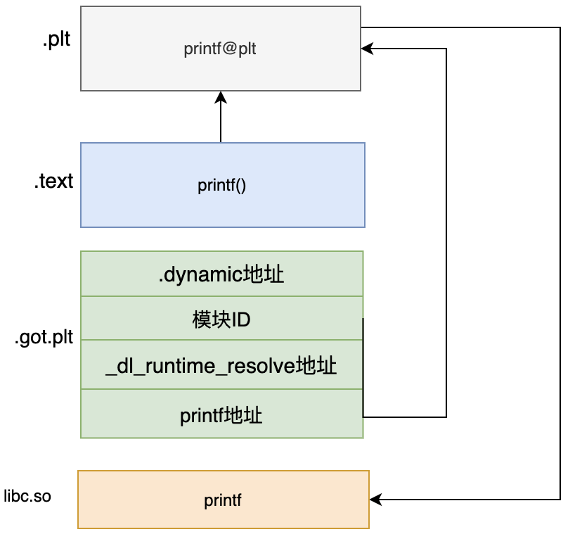
SugarCube 的链接标记由三个组件组成：
Link 组件
- • 必需组件
- • Passage 标题或 URL
- • 早期评估
Text 组件
- • 可选组件
- • 链接显示文本
- • 早期评估
Setter 组件
- • 可选组件
- • <<set>> 表达式
- • 晚期评估（点击时）
语法格式：
<!-- 基本链接 -->
[[链接文本|目标Passage]]
<!-- 带Setter的链接 -->
[[打开门|][$doorOpen to true; $score += 10]]
<!-- 使用箭头分隔符 -->
[[链接文本->目标Passage]]
[[目标Passage<-链接文本]]<<link>> 宏
<<link>> 宏是创建动态链接的推荐方式，特别适用于使用表达式作为目标的情况。它具有以下优势[214][217]：
- 避免在 Twine 2 中自动创建不需要的 Passage
- 支持复杂表达式作为目标
- 可以包含嵌套内容
- 更好的代码可读性
<!-- 基本用法 -->
<<link "继续冒险" "Next Scene">>
你决定继续前行...
</link>
<!-- 带Setter的链接 -->
<<link "购买物品" "Shop">>
<<set $gold -= 10>>
<<set $hasItem to true>>
</link>
<!-- 动态目标 -->
<<set $destination to "SecretRoom">>
<<link "进入神秘房间" $destination>>
门缓缓打开...
</link>
常见问题：使用标准链接语法 [[$variable]] 时，Twine 2
会自动创建一个名为 $variable 的
Passage。使用 <<link>> 宏的参数形式可以避免这个问题[217]。
高级链接技巧
1. 条件链接：
<<if $hasKey>>
<<link "打开锁着的门" "SecretRoom">>
门打开了...
</link>
<<else>>
门锁着，需要钥匙
</if>2. 图像链接：
[img[forest.jpg|Forest][进入森林]]
[img[forest.jpg->Forest][进入森林]]3. 带有多个Setter的链接：
[[行动|Result][$hp -= 10; $xp += 50; $level = floor($xp / 100)]]三、CSS UI界面定制
SugarCube 2 提供了灵活的 CSS 定制系统，允许开发者完全自定义游戏界面的外观。通过修改 UI 栏、按钮、链接等元素的样式，可以创建独特的视觉风格[277]。
SugarCube 默认UI结构
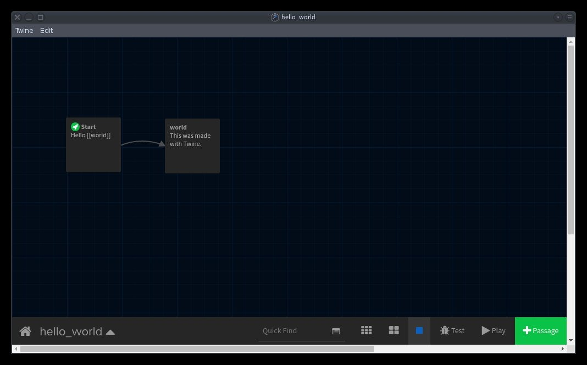
SugarCube 2 的默认 UI 包含以下主要元素[277]：
#ui-bar
UI栏（侧边栏）的父容器
#ui-bar-history
历史记录按钮区域
#menu
菜单列表
#passages
主要内容区域
#story-caption
故事说明区域
#ui-bar-toggle
UI栏切换按钮
UI栏（Ui Bar）定制
整个 UI 栏的父元素 ID 为 ui-bar，通过修改这个元素的样式可以实现侧边栏的整体定制[277]。
/* UI栏整体样式 */
#ui-bar {
background-color: #1a1a2e;
border-right: 2px solid #16213e;
color: #e94560;
}
/* 历史记录和切换按钮 */
#ui-bar-history [id|=history],
#ui-bar-toggle {
color: #0f3460;
}
#ui-bar-history [id|=history]:hover,
#ui-bar-toggle:hover {
color: #e94560;
background-color: rgba(233, 69, 96, 0.1);
}
/* 菜单项 */
#menu li a {
color: #e94560;
padding: 8px 12px;
display: block;
transition: all 0.3s ease;
}
#menu li a:hover {
color: #fff;
background-color: #e94560;
padding-left: 16px;
}链接和按钮样式
链接状态样式：
/* 未访问链接 */
a {
color: #3498db;
text-decoration: none;
border-bottom: 1px dotted #3498db;
}
/* 已访问链接 */
a:visited {
color: #9b59b6;
border-bottom-color: #9b59b6;
}
/* 鼠标悬停 */
a:hover {
color: #e74c3c;
border-bottom-color: #e74c3c;
background-color: rgba(231, 76, 60, 0.05);
}自定义按钮样式：
a.link-button {
display: inline-block;
padding: 10px 20px;
background-color: #3498db;
color: white;
border-radius: 5px;
text-decoration: none;
margin: 5px;
transition: all 0.3s ease;
}
a.link-button:hover {
background-color: #2980b9;
transform: translateY(-2px);
box-shadow: 0 4px 8px rgba(0, 0, 0, 0.2);
}响应式设计与动画
1. 移动设备适配：
@media screen and (max-width: 600px) {
#ui-bar {
width: 100%;
height: auto;
position: relative;
border-right: none;
border-bottom: 2px solid #34495e;
}
#story-caption {
position: relative;
width: 100%;
margin: 20px 0;
}
}2. 淡入动画：
.passage {
animation: fadeIn 0.5s ease-in;
}
@keyframes fadeIn {
from {
opacity: 0;
transform: translateY(20px);
}
to {
opacity: 1;
transform: translateY(0);
}
}四、JavaScript API与界面控制
SugarCube 2 提供了丰富的 JavaScript API，允许开发者通过编程方式控制游戏界面、修改 UI 元素、响应事件等。JavaScript 代码应放置在 Story JavaScript Passage 中，并在私有作用域中执行[214]。
核心对象API
State 对象
访问和修改故事状态
State.variables.score = 100;
State.passage;
State.length;Engine 对象
控制游戏流程
Engine.play('PassageName');
Engine.restart();UI 对象
管理界面元素
UI.bar.show();
UI.bar.hide();
UI.bar.toggle();事件系统
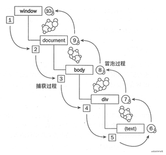
SugarCube 提供了多种事件，可以监听和响应游戏状态的变化：
| 事件名称 | 触发时机 | 典型用途 |
|---|---|---|
| :passageinit | Passage 被初始化时 | 初始化变量、设置状态 |
| :passagestart | Passage 开始渲染时 | 记录返回位置 |
| :passagerender | Passage 渲染完成时 | 更新 UI、执行后续操作 |
| :passagedisplay | Passage 显示完成后 | 执行显示后的逻辑 |
<!-- 记录返回位置 -->
$(document).on(':passagestart', function (ev) {
if (!ev.passage.tags.includes('noreturn')) {
State.variables.return = ev.passage.title;
}
});
<!-- 更新StoryCaption -->
$(document).on(':passagerender', function (ev) {
setPageElement("story-caption", "Story Caption");
});
<!-- 自定义函数 -->
window.calculateScore = function(base, bonus) {
return base + bonus * 1.5;
};Dialog API
Dialog API 用于创建自定义对话框，可以显示提示信息、设置选项等内容。
<!-- 基本对话框 -->
Dialog.setup('提示', 'info-dialog');
Dialog.wiki('这是一个提示对话框');
Dialog.open();
<!-- 自定义对话框内容 -->
Dialog.setup('设置', 'settings-dialog');
Dialog.wiki(`
<<set $fontSize to either(14, 16, 18)>>
字体大小: $fontSize px
<<link "确定">>
<<run Dialog.close()>>
</link>>
`);
Dialog.open();自定义宏
SugarCube 允许开发者创建自定义宏来扩展功能。自定义宏定义在 Story JavaScript Passage 中。
Macro.add('notify', {
handler: function() {
var message = this.args[0] || '';
var duration = this.args[1] || 2000;
var notification = document.createElement('div');
notification.className = 'notify-message';
notification.textContent = message;
document.getElementById('ui-bar').appendChild(notification);
setTimeout(function() {
notification.remove();
}, duration);
}
});
<!-- 使用示例 -->
<<notify "获得了一把钥匙!" 3000>>最佳实践与进阶技巧
代码组织
- 将 JavaScript 代码放在 Story JavaScript 中
- 将 CSS 样式放在 Story Stylesheet 中
- 使用特殊 Passage 用于特定功能
- 为代码添加详细注释
性能优化
- 缓存 DOM 引用避免频繁访问
- 使用事件委托减少监听器数量
- 避免在事件处理中执行耗时操作
- 优化图片和资源加载
错误处理
- 始终使用 try-catch 处理错误
- 验证用户输入
- 在 StoryInit 中初始化所有变量
- 使用浏览器开发者工具调试
安全规范
- 避免使用 eval() 等不安全函数
- 为自定义对象提供 toJSON() 方法
- 将函数附加到 window 对象
- 保持一致的命名风格
数据管理、对象存取与存档机制
深入解析 SugarCube 的数据结构处理方法，演示如何使用对象和数组管理复杂的游戏状态（如背包系统），并详细介绍内置的存档与读档系统，确保玩家进度安全持久。
数据结构基础
State.variables 对象
SugarCube 中用于存储游戏状态变量的核心对象，所有需要持久化的变量都应存储于此。
State.variables.playerName = "Alice"
在 TwineScript 中可简写为 $playerName。
临时与配置对象
State.temporary
存储当前段落结束后清除的数据（_variable）。
setup 存储不参与存档的配置和常量。
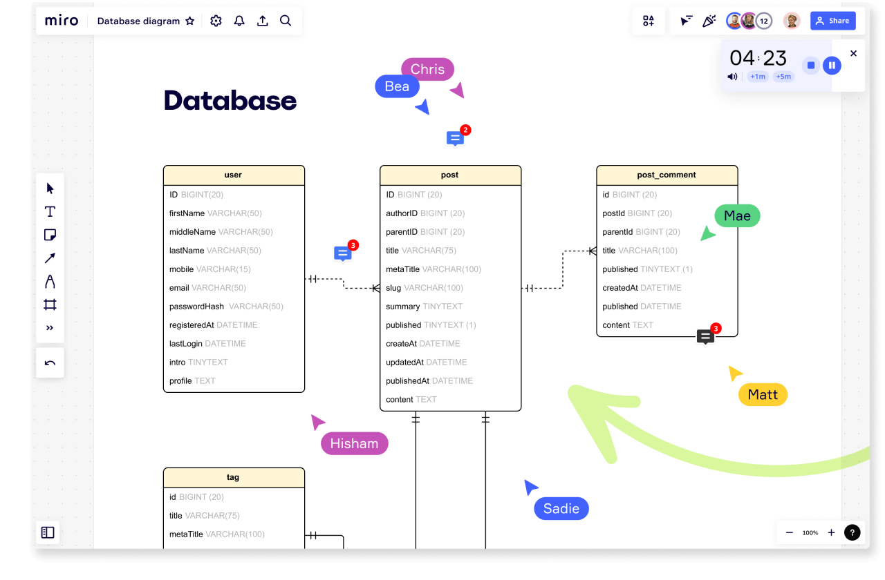
数据结构可视化：对象嵌套与引用关系
对象的使用
<<set $player = {
name: "Hero",
level: 1,
hp: 100,
stats: {
strength: 10,
agility: 8
}
}>>
<<print $player.stats.strength>> // 输出: 10数组的高级操作
SugarCube 扩展了原生数组方法，提供了便捷的删除和随机操作。
// 添加元素
<<set $inventory.push("sword")>>
<<set $inventory.unshift("shield")>>
// SugarCube 扩展方法
<<set $inventory.delete("sword")>> // 删除所有匹配项
<<set $shuffled = $inventory.toShuffled()>> // 随机打乱
<<set $unique = $inventory.toUnique()>> // 去重背包系统实现
核心挑战：对象引用
在 JavaScript 中，对象是通过引用比较的。直接使用 includes()
检查数组中的对象可能无法正确识别。
错误示例
<<if $inventory.includes($sword)>>
正确做法：使用唯一 ID
findIndex(function(item) { return item.id === "weapon.sword"; })
完整宏实现
在 Story JavaScript 中定义宏，实现自动堆叠、数量管理和 UI 渲染。
Macro.add("addToInv", {
handler: function () {
var obj = this.args[0];
var idx = State.variables.inventory.findIndex(function (item) {
return item.id === obj.id;
});
if (idx === -1) {
obj.count = 1;
State.variables.inventory.push(obj);
} else {
State.variables.inventory[idx].count++;
}
}
});系统界面示意
通过 SugarCube 的 Dialog API 和自定义宏，可以构建出功能完善的背包管理界面。
存档与读档机制
Save.slots API
-
1
Save.slots.save(slot)保存游戏到指定槽位（如 0, 1, 2）。
-
2
Save.slots.load(slot)从指定槽位加载游戏状态。
-
3
Save.slots.has(slot)检查指定槽位是否存在存档。
-
4
Save.slots.delete(slot)删除指定槽位的存档。
自动保存配置
在 Story JavaScript 中配置自动保存行为，防止意外数据丢失。
Config.saves.autosave = true;
全局启用自动保存
Config.saves.autosave = ["autosave"];
仅对带有 "autosave" 标签的段落生效
Config.saves.autoload = "prompt";
启动时提示加载自动存档
高级技巧与常见问题
Q: 如何避免对象引用导致的数据污染？
直接赋值会导致修改副本时影响原对象。需要使用深度克隆。
JSON.parse(JSON.stringify(object))
Q: 哪些数据不应该存入 State.variables？
配置项、常量或临时战斗状态应存储在 setup 对象中，以减小存档体积。
Q: 如何实现存档描述信息？
利用 Config.saves.description
配置函数，动态生成包含当前章节或时间的存档描述。
Q: 自动保存会影响性能吗？
频繁写入 LocalStorage 可能会卡顿。建议仅在关键剧情节点或章节切换时触发自动保存。
综合实战案例：构建互动故事原型
基于 Intfiction 社区开发经验，带你从头构建一个完整的互动故事原型——"神秘古堡探索"。综合运用 SugarCube 的核心语法，实现背包系统、变量追踪、多层解谜逻辑和 UI 定制等复杂功能。
项目概述
核心系统 1：背包系统
Macro.add("addToInv", {
handler : function () {
var obj = this.args[0];
var idx = State.variables.inventory
.findIndex(i => i.id === obj.id);
if (idx === -1) {
State.variables.inventory.push(obj);
} else {
State.variables.inventory[idx].count++;
}
}
});
Macro.add("listInv", {
handler : function () {
// 动态生成背包列表DOM
// 包含物品名称、数量和丢弃按钮
}
});<<initInv>>
<<set $rustyKey to {
id: "key.rusty",
name: "生锈的钥匙",
description: "一把古老的生锈钥匙",
count: 1,
type: "key"
}>>实现原理
背包系统通过在 JavaScript Passage 中定义自定义宏实现。利用 State.variables
存储物品数组，每个物品都是一个对象，包含 ID、名称、描述和数量等属性。
addToInv
自动检测物品是否存在，存在则增加数量，不存在则追加。
removeFromInv
减少物品数量，数量归零时从数组中移除。
背包界面设计示例
核心系统 2：解谜逻辑系统
密码锁谜题
通过数组操作验证用户输入的序列是否匹配预设密码。
<<if $codeInput.length == 4>>
<<for _i to 0; _i < 4; _i++>>
<<if $codeInput[_i] isnot
$correctCode[_i]>>
<<set _correct to false>>
<</if>>
<</for>>
<</if>>物品组合谜题
检查多个变量状态（是否持有宝石），全部满足才触发解谜成功。
<<if $hasBlueGem and
$hasRedGem and
$hasGreenGem>>
<<set $puzzleSolved to true>>
<<goto "SolvedPuzzle">>
<</if>>状态追踪谜题
利用 hasVisited()
函数判断玩家探索历史，影响后续选项。
<<if hasVisited("Forest")>>
<<set _visitedCount++>>
<</if>>
<<if _visitedCount >= 2>>
[[快速通过|ShortcutExit]]
<</if>>完整游戏流程
<<if $gameState.puzzle1Solved and
$inventory.findByID($ancientBook) and
$gameState.basementDoorOpen>>
<<link "打开宝箱">>
<<set $gameState.gameWon to true>>
<<set $player.gold += 1000>>
恭喜你！你找到了传说中的宝藏！
获得了1000金币和200经验值！
<<goto "Victory">>
<</link>>
<<else>>
你还需要解开所有谜题才能打开宝箱。
<</if>>变量管理策略
使用对象组织相关变量，避免全局命名空间污染。
<<set $player to {
name: "探险者",
hp: 100,
level: 1,
gold: 50
}>>进阶扩展
- 物品组合：利用数组操作实现物品合成。
-
时间限制：使用
<<timed>>宏实现。 - 技能系统：扩展对象属性，增加等级判定。
权威资源索引与开发进阶指南
汇总 Twine Cookbook、Intfiction 论坛及 SugarCube 官方文档等关键资源，提供实用的调试技巧、代码优化实践以及系统化的学习路径，助你突破技术瓶颈。
权威资源索引
调试技巧与工具
浏览器开发者工具
通过 Console 直接访问 `SugarCube.State.active.variables` 对象，实时查看和修改变量值[393]。
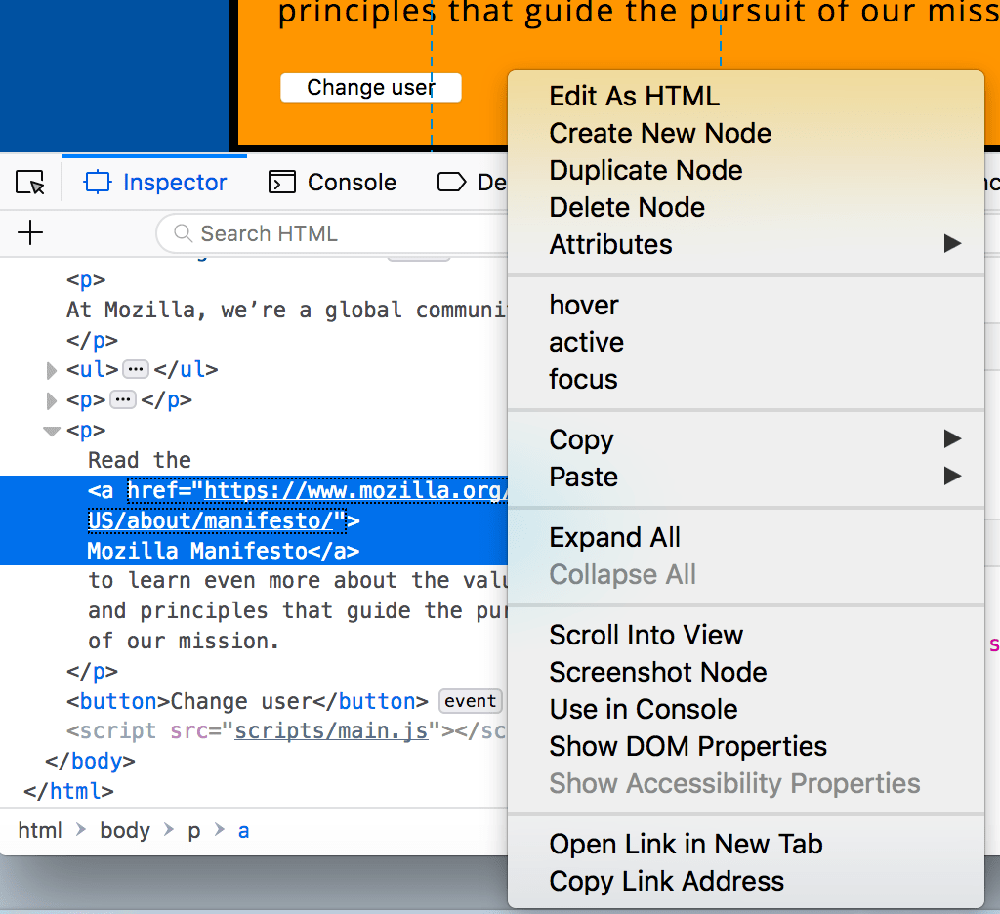
使用步骤：
- 按 F12 打开开发者工具
- 切换到 "Console" 标签页
- 输入对象名查看变量状态
- 直接赋值修改变量（如 `SugarCube.State.active.variables.$name = "NewName"`）
sc-debugger 专用工具
专为 SugarCube v2 设计的调试工具，提供变量列表编辑、分组标签页及值锁定功能[391]。
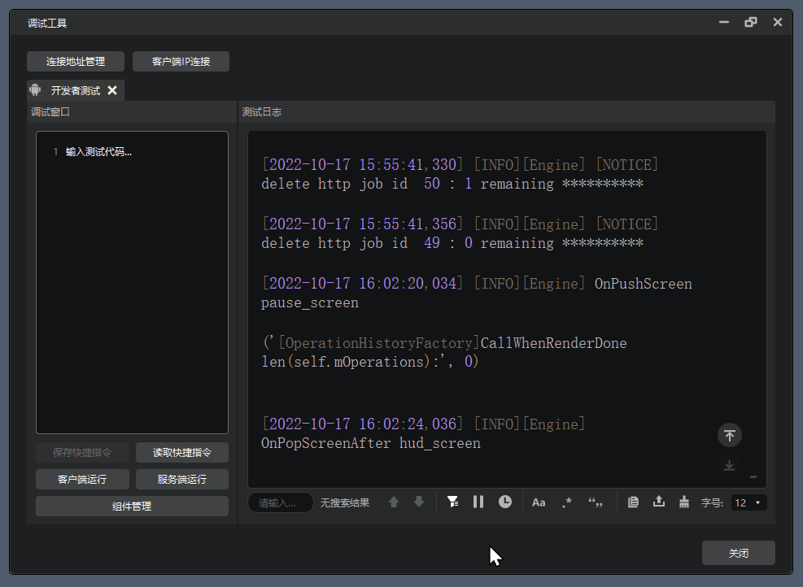
快速配置：
- 将 JS 和 CSS 文件复制到 Story JavaScript/Stylesheet
- 创建 `sc-debugger` 通道并添加 markup
- 游戏中按
=键唤出
控制台输出调试
<<set $var to 10>>
<<print "var: " + $var>>
<<set $var += 15>>
<<print "var after update: " + $var>>
// 使用 JavaScript console.log 输出到浏览器控制台
<<script>>console.log('Debug Point 1: ' + State.variables.var)<</script>>代码优化最佳实践
开发进阶学习路径
掌握核心概念
创建第一个故事，理解 Passage（通道）概念，学习基础链接创建与变量系统（裸变量标记）。阅读 Twine Cookbook 的 "First Story" 教程。
深化逻辑与样式
深入理解数据存储策略，掌握对象和数组操作。学习条件处理、链接交互宏以及 CSS 样式应用与主题定制。
精通调试与优化
熟练使用 sc-debugger 和浏览器开发者工具。实施变量存储优化，进行自定义宏开发与 JavaScript 集成，处理复杂多媒体资源。